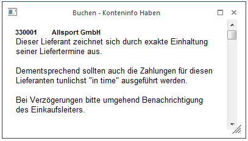

Das Fenster "Buchen - Konteninfo Haben" wird dann geöffnet, wenn der Button
Ø Konteninfo
in einem Buchungsprogramm aktiviert wurde. Diese Option steht in folgenden Buchungsprogrammen zur Verfügung:
ü Buchen Dialog Stapel
ü Buchen Eingangsrechnung
ü Buchen Ausgangsrechnung
ü Buchen Zahlungsmittelkonten
ü Buchen (Splitbuchungen)

Standardmäßig werden folgende Informationen des Haben-Kontos angezeigt:
ü Kontonummer, Kontoname
ü Kontennotiz aus dem Stammdatenfenster "Notiz".
Das Fenster ist frei definierbar und es können alle Informationen aus dem Kontenstamm angedruckt werden.